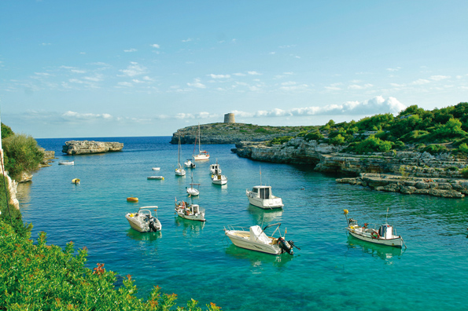

Sant Lluís, französische Wurzeln
 Menorca war schon immer ein wünschenswertes Land für viele Kuturen und Völker, und alle Eroberer haben hier ihre Spuren hinterassen. Sieben Jahre lang, zwischen 1756 und 1763, war Menorca in französischer Hand, wodurch das erste Dörfchen der heutigen Gemeinde Sant Lluís enstand. Es wurde damals zu Ehren König Louis XV gegründet. Wie es zu seiner Zeit üblich war, wurden die Strassen sehr gradlinig angelegt: einfache, gerade Strassen die auch heute noch den Stadtkern ausmachen. Die Hautstrasse, ist die Cos, in der sich auch die meisten Geschäfte befinden.
Menorca war schon immer ein wünschenswertes Land für viele Kuturen und Völker, und alle Eroberer haben hier ihre Spuren hinterassen. Sieben Jahre lang, zwischen 1756 und 1763, war Menorca in französischer Hand, wodurch das erste Dörfchen der heutigen Gemeinde Sant Lluís enstand. Es wurde damals zu Ehren König Louis XV gegründet. Wie es zu seiner Zeit üblich war, wurden die Strassen sehr gradlinig angelegt: einfache, gerade Strassen die auch heute noch den Stadtkern ausmachen. Die Hautstrasse, ist die Cos, in der sich auch die meisten Geschäfte befinden.
Sant Lluís, mit mehr als 7.500 Einwohnern, liegt im Osten der Insel. Am Ortseingang liegt eine von drei Mühlen, die Moli de Dalt, die Sant Lluís seid ca. zwei Jahrhunderten beherbergt. Moli de Dalt ist zweifellos die am besten erhaltene und auch das Wahrzeichen. Ihre weiss-blaue Kuppel gibt dem Stadtzentrum seine persönliche Note. Sie ist die Skyline von Sant Lluís und hat mit ihrer mehr als 200 Jahren Geschichte einen Ehrenplatz im Dorf. Wie schon gesagt, wenn Sie von Mahon nach Sant Lluís fahren, wird Sie der Anblick der Mühle, direkt am Ortseingang , den Atem rauben. Mit ihrem possanten Aussehen reckt sie sich direkt in den blauen Himmel. Nutzen Sie die Gelegenheit und besuchen Sie das kleine ethnologische Museum im Erdgeschoss. Wir empfehlen auch einen Besuch in der Kirche. Das neoklassistische Gebäude, auch aus der französischen Ära, ist ein weiteres Symbol der Stadt, das sich mit ihrem eleganten und auch zeitgemässem Äusserem, den Besuchern einen wundervollen Anblick bietet.
 Sant Luis ist, ohne Zweifel, eine der Gemeinden der Insel mit dem grössten Touristenaufkommen von Menorca. Das kommt durch die hervorragende Lage. Im Süden und im Osten vom Meer umringt, gibt es dort viele Buchten und Strände mit kleinen Ansiedelungen die einen wunderschönen und bequemen Zugang ans Wasser ermöglichen. Das ist der Reiz, viele die jemals für eine vorrübergehende Zeit nach Sant Lluís kamen, haben sich letztendlich mit dem Kauf eines Eigentums an einem der weissen Strände mit kristallklarem Wasser, niedergelassen. Binibeca ist einer der Gründe für die grosse Anziehnungkraft von Sant Lluís. Das kleine Fischerdorf hat sich zum Anziehungpunkt der Touristen gewandelt und enthält eine magische Energie hinter jeder Ecke. Die engen Gassen die sich zwischen den weissgekalkten Häusern winden sind auf unzähligen Fotos verewigt. Sie erliegen bestimmt auch ihrem unfassbarem Charme. Es ist ja auch normal, wenn Sie durch die Mittelmeerlandschaft schlendern und sich in den Gassen verlieren, in denen das Meererauschen hallt.
Sant Luis ist, ohne Zweifel, eine der Gemeinden der Insel mit dem grössten Touristenaufkommen von Menorca. Das kommt durch die hervorragende Lage. Im Süden und im Osten vom Meer umringt, gibt es dort viele Buchten und Strände mit kleinen Ansiedelungen die einen wunderschönen und bequemen Zugang ans Wasser ermöglichen. Das ist der Reiz, viele die jemals für eine vorrübergehende Zeit nach Sant Lluís kamen, haben sich letztendlich mit dem Kauf eines Eigentums an einem der weissen Strände mit kristallklarem Wasser, niedergelassen. Binibeca ist einer der Gründe für die grosse Anziehnungkraft von Sant Lluís. Das kleine Fischerdorf hat sich zum Anziehungpunkt der Touristen gewandelt und enthält eine magische Energie hinter jeder Ecke. Die engen Gassen die sich zwischen den weissgekalkten Häusern winden sind auf unzähligen Fotos verewigt. Sie erliegen bestimmt auch ihrem unfassbarem Charme. Es ist ja auch normal, wenn Sie durch die Mittelmeerlandschaft schlendern und sich in den Gassen verlieren, in denen das Meererauschen hallt.
Es gibt keine Zweifel, Binibeca ist sehr speziell. Sant Lluís bietet viele weitere Buchten und Sehenwürdigkeiten die Sie ansteuern können. Orte mit einer besonderen Persönlichkeit, die auch unter dem touristischem Einfluss keineswegs gelitten haben.
Cala Alcaufar, zum Beispiel, ist ein sehr authentisches Fischerdörfchen was von den Inselbewohnern als Sommerresidenz in Beschlag genommen wird. Biniancolla ist ein weiteres Plätzchen was zu 100% Menorcas Leben wiederspiegelt, mit maritimen Flair und auch sehr gut zum Baden um den Meeresgrund dort zu erforschen. Binisafúller, Cap den Font, Son Ganxo...alle Ansiedelungen entlang der Küste sind sich sehr ähnlich, aber trotzdem hat jedes Plätzchen seinen eigenen Charme. Wir können Ihnen nur empfehlen, mal auf eigene Faust einen Abstecher an die einzige Küstenstrasse zu machen.
Punta Prima ist die wohl am bequemsten zu erreichende Strandidylle für Familien. Der relativ grosse Sandstrand ist durch sein niedriges Wasser am Anfang sehr geeignet für Familien mit Kleinkindern. Wenn Sie sich an diesem Strand befinden, haben Sie eine schöne Aussicht auf die Silhouette der vorliegenden Leuchtturminsel. Das ist die „Illa del Aire“ , Insel des Windes, die als Bewohner ausschliesslich von den schwarzen Eidechsen bevölkert wird. Einzigartig Weltweit, hat sich diese Gattung auf der 30 Hektar kleinen Insel behauptet und fortgepflanzt. Sie leben dort auf der von Menschen unbewohnten Insel ganz ohne scheu und sind den Bootsfahrern im Sommer immer sehr freundlich gegenüber. Eine einzigartige Felsenbucht mit atemberaubender Landschaft finden Sie auch in Cala Rafalet. Zu Fuss durch die Klippen hindurch finden Sie einen schmalen Zugang zum kristallklarem Wasser, der perfekte Platz zum schnorcheln oder tauchen. Lassen Sie sich in dieser hektikfreien Umgebung einfach völlig gehen und atmen Sie tief durch. Verschmelzen Sie mit der Natur.
<>Sant Lluís ist auch gut zu Fuss zu entdecken. Es gibt kleine Färten, die Sie durch die kleinen vorgelegenen alten Strassen mit den kleinen menorquinischen Landhäusern bringen, die schon bevor das Dorf entstand existierten. Sie finden auch hier wieder archeologische Sehenwürdigkeiten, sowie das Talaiot Es Pujol oder den Küstenwachturm Talaia von Torret. Spazieren Sie einfach drauf los und sehen Sie selber. Sant Lluís hat viel mehr zu bieten als man denkt. In Sant Lluís werden Sie mit offen Armen empfangen, da das Dorf an den Tourismus gewöhnt ist und Sie dort alle Dienstleistungen finden die sich vorstellen können. Wenn Sie Ende August in der Gemeinde Urlaub machen, dann besuchen Sie die Festtage am 25. August ( falls der 25 ein Wochentag ist, findet die Fiesta am folgenden Wochenende statt). Die Fiesta, die traditionell durch das Pferd bestimmt wird und natülich durch den unglaublichen Spass, ist immer einen Besuch wert. Es wird getanzt und getrunken, natürlich mit den Pferden und seinen „caixers“(Reiter)! Verpassen Sie diese magischen Momente nicht. In Sant Lluís gibt es an diesen Tagen noch einen kleinen Umzug durch die Strassen, der uns ein wenig an Karneval erinnert und sehr schön anzusehen ist. In der Tat, ist es nicht zu verzeihen Sant Lluís nicht zu besuchen. Die schönen Buchten, die Innenstadt, die etnologischen Orte... Es ist fast obligatorisch Sant Lluís einen Besuch abzustatten, wenn Sie auf Menorca Urlaub machen.